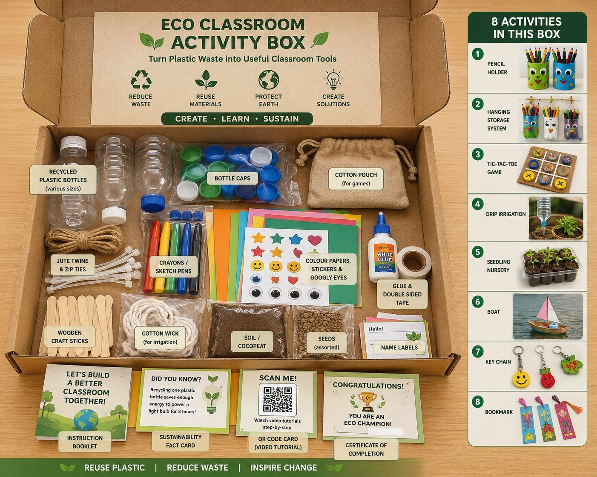

Plastic has nowhere to go
In communities without reliable waste collection, plastic is often burned or discarded near waterways, creating risks for health and the environment.
Sustainability & Innovation
Loop2Life is a student-led initiative in Laos that transforms non-recyclable plastic into practical school furniture while teaching young people how circular solutions can begin in their own communities.
Plastic Waste
Ecobricks
School Furniture
The Challenge
Plastic pollution and limited school facilities affect the same communities. Loop2Life connects both challenges through education, collection, and hands-on construction.
In communities without reliable waste collection, plastic is often burned or discarded near waterways, creating risks for health and the environment.
Rural schools may lack sufficient benches, reading tables, and opportunities for structured environmental education.
Our Solution
Students explore plastic pollution and the circular economy through eco-brick making and eco-box activities.
Students and families gather clean, dry, non-recyclable plastic from their homes and nearby communities.
Plastic is tightly packed into bottles and checked for consistent firmness and density before construction.
Ecobricks are combined with supportive frames to create benches and reading tables for participating schools.
Learning Sustainability Through Hands-on Activities

The Eco Classroom Activity Box is a collection of educational materials designed to help students learn about sustainability through hands-on activities.
Instead of only learning in a classroom, students create useful objects from recycled materials, explore environmental issues, and develop practical skills that support the Loop2Life project.
Measures of Success
Our targets combine environmental outcomes, student learning, and long-term continuity. Success is not only what we build, but whether the school can continue the model independently.
Project Timeline
August – October 2026
Build partnerships, recruit volunteers, prepare training materials, collect bottles, and organize awareness activities.
November 2026
Launch the first workshop at the National University of Laos, evaluate the process, and refine the program.
December 2026 – January 2027
Expand to rural secondary schools, conduct workshops and collection drives, build furniture, and train teachers.
Our Vision
Loop2Life aims to turn a visible environmental problem into a visible symbol of student action—one ecobrick, one piece of furniture, and one community at a time.